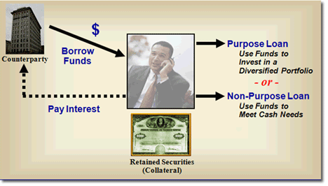

A second, and again very basic, approach involves borrowing against the stock. This provides the liquidity to invest the borrowed funds into a portfolio that will offer some diversification against the concentrated security or to meet cash needs.
Loans secured by stock or bond positions can be classified as one of two types: purpose and non-purpose. The classification of the loan depends on the use of the proceeds. A "purpose loan" is used to invest in securities. A "non-purpose loan" is a loan used for anything other than purchasing securities.
Purpose loans are exempt from Regulation U (Reg U) but must comply with Regulation T (Reg T). Reg T limits the extension of credit up to 50% of the value of the securities. However, most brokerage firms have more conservative margin limits. If the value of the security falls below the specified equity to loan ratio (margin/Reg T requirement) the brokerage firm will make a margin call, which may force a sale of the securities if the client cannot provide other liquid funds to their account to maintain their Reg T minimums.

Advantages
-
No tax liability is triggered
-
Provides liquidity for diversification or to meet cash needs
-
Continued opportunity to participate in stock appreciation
-
Retention of ownership, voting rights, and dividends
Disadvantages
-
Interest expense of the loan
-
No protection against stock price declines (except for the protection offered by the diversification)
-
Loan size is capped by margin rules
-
Potential forced liquidation at low price if there is a margin call
|